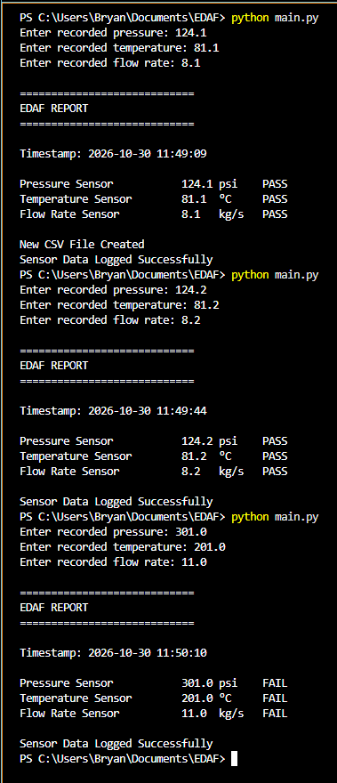
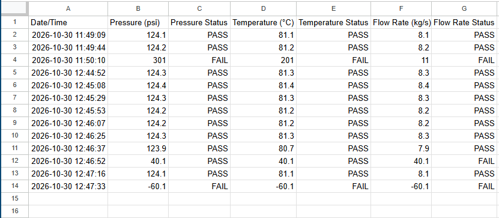

Project Information: The Engineering Data Acquisition Framework
was developed using Python, to collect, validate and store sensor data
such as temperature, pressure, and flow rate. The implemented sensor
validation logic can detect and flag measurements that are out of range.
The generated CSV file reports are timestamped, formatted, and can be
used for further engineering analysis. The modular designed workflow
separates input handling, sensor validation, logging, & display functions
for improved readability and scalability to the engineer or programmer.
#Engineering Data Acquisition Framework - main.py
#Bryan Martinez
#This software tool logs pressure readings, validates sensor data,
#and stores the results in a CSV file.
#Import the required functions
from utils import get_float
from utils import get_dataInput
from validation import validate_data
from display_data import get_report
from sensor_logger import log_data
#1. Call the get_float() function
#Obtains Pressure, Temperature, and Flow Rate float inputs
pressure = get_float("Enter recorded pressure: ")
temperature = get_float("Enter recorded temperature: ")
flow_rate = get_float("Enter recorded flow rate: ")
#2. Call the get_dataInput() function
#Stores timestamp and the input data: pressure, temperature, flow rate
dataInput = get_dataInput(pressure, temperature, flow_rate)
#print(dataInput)
#3. Call the validate_data() function
#Determines if the data readings/measurments are within a valid range
dataInput = validate_data(dataInput)
#print(dataInput)
#4. Call the get_report() function
#Generates a formatted data report and adds a PASS/FAIL status for each recorded reading
get_report(dataInput)
#5. Call the log_data() function
#Logs the formatted data report to a CSV file
log_data(dataInput)
#Engineering Data Acquisition Framework - utils.py
#This module defines reusable functions: get_float() and get_dataInput()
#Define the get_float() function to validate input, handle errors/exception, and return a float value
def get_float(prompt):
while True:
try:
value = float(input(prompt))
return value
except ValueError:
print("Invalid number format. Please try again")
#Define the get_dataInput() function: will convert the input into a dictionary with nested dictionaries
#Adds formatted/corresponding units of measurement
from datetime import datetime
def get_dataInput(pressure, temperature, flow_rate):
#Retrieve date and time
timestamp = datetime.now().strftime("%Y-%m-%d %H:%M:%S")
#create the new dictionary
dataInput = {
"Timestamp" : timestamp,
"Pressure_Sensor" : {"Reading" : pressure, "Units" : 'psi'},
"Temperature_Sensor" : {"Reading" : temperature, "Units" : '°C'},
"Flow_Rate_Sensor" : {"Reading" : flow_rate, "Units" : 'kg/s'}
}
return dataInput
#Engineering Data Acquisition Framework - validation.py
#This module defines the validate_data() function and specifies the ranges
#to validate sensor data accordingly
#Specify the valid ranges by assigning minimum and maximum values
MIN_PRESSURE = 0
MAX_PRESSURE = 300
MIN_TEMPERATURE = -50
MAX_TEMPERATURE = 200
MIN_FLOW_RATE = 0
MAX_FLOW_RATE = 10
#The validate_data() function assigns 'True' to Valid readings
#and assigns 'False' to Invalid readings
def validate_data(dataInput):
#Retrieve p,t,f from dataInput dictionary:
pressure = dataInput["Pressure_Sensor"]["Reading"]
temperature = dataInput["Temperature_Sensor"]["Reading"]
flow_rate = dataInput["Flow_Rate_Sensor"]["Reading"]
#Validate pressure, add indicator to dictionary
if MIN_PRESSURE <= pressure <= MAX_PRESSURE:
dataInput["Pressure_Sensor"]["Valid"] = True
else:
dataInput["Pressure_Sensor"]["Valid"] = False
#Validate temperature, add indicator to dictionary
if MIN_TEMPERATURE <= temperature <= MAX_TEMPERATURE:
dataInput["Temperature_Sensor"]["Valid"] = True
else:
dataInput["Temperature_Sensor"]["Valid"] = False
#Validate flow rate, add indicator to dictionary
if MIN_FLOW_RATE <= flow_rate <= MAX_FLOW_RATE:
dataInput["Flow_Rate_Sensor"]["Valid"] = True
else:
dataInput["Flow_Rate_Sensor"]["Valid"] = False
return dataInput
#Engineering Data Acquisition Framework - display_data.py
#This module defines the get_report() function
#The get_report() function generates and displays
#the formatted sensor data input measurement report
def get_report(dataInput):
#Print banner
print("\n============================\n"
"EDAF REPORT\n"
"============================\n")
#Print timestamp
timestamp = dataInput["Timestamp"]
print(f"Timestamp: {timestamp}\n")
#Print sensor readings, units, and validity for each sensor
for key, value in dataInput.items():
#Use an 'if' statement and 'continue' keyword to skip the timestamp key
if key == "Timestamp":
continue
else:
display_key = key.replace("_", " ")
reading = value["Reading"]
units = value["Units"]
valid = value["Valid"]
status = "PASS" if valid else "FAIL"
#this prints in one line:
#print(f"{key} {reading} {units} {valid}")
#Format the output
print(f"{display_key:<25} {reading:<5} {units:<6} {status}")
#Engineering Data Acquisition Framework - sensor_logger.py
#This module defines the log_data() function
#Import the 'os' and 'csv' modules
import os
import csv
#Assign the CSV file name and header
CSV_FILE = "data/sensor_log.csv"
CSV_HEADER = [
"Date/Time",
"Pressure (psi)",
"Pressure Status",
"Temperature (°C)",
"Temperature Status",
"Flow Rate (kg/s)",
"Flow Rate Status"
]
#The log_data function accepts the dataInput sensor measurement information and logs it to a CSV file
def log_data(dataInput):
timestamp = dataInput["Timestamp"]
pressure = dataInput["Pressure_Sensor"]["Reading"]
pressure_status = dataInput["Pressure_Sensor"]["Valid"]
pressure_status = "PASS" if pressure_status else "FAIL"
temperature = dataInput["Temperature_Sensor"]["Reading"]
temperature_status = dataInput["Temperature_Sensor"]["Valid"]
temperature_status = "PASS" if temperature_status else "FAIL"
flow_rate = dataInput["Flow_Rate_Sensor"]["Reading"]
flow_rate_status = dataInput["Flow_Rate_Sensor"]["Valid"]
flow_rate_status = "PASS" if flow_rate_status else "FAIL"
if not os.path.exists(CSV_FILE) or os.path.getsize(CSV_FILE) == 0:
with open(CSV_FILE, "w", newline="") as file:
writer = csv.writer(file)
writer.writerow(CSV_HEADER)
writer.writerow([timestamp, pressure, pressure_status,
temperature, temperature_status,
flow_rate, flow_rate_status])
print("\nNew CSV File Created\nSensor Data Logged Successfully")
else:
with open(CSV_FILE, "a", newline="") as file:
writer = csv.writer(file)
writer.writerow([timestamp, pressure, pressure_status,
temperature, temperature_status,
flow_rate, flow_rate_status])
print("\nSensor Data Logged Successfully")
INPUT:
The Engineering Data Acquisition Framewrok collects the
recorded pressure, temperature, and flow rate values.
The data is then validated, formatted, and logged.

OUTPUT:
The Engineering Data Acquisition Framework
can display the formatted reports to the
terminal and can generate a sensor data CSV file
